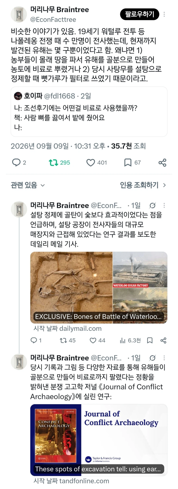

https://bbs.ruliweb.com/best/board/300143/read/76630321

https://bbs.ruliweb.com/best/board/300143/read/76630321

저거 알려지기 전에는 동네 사람들 나와서 시체랑 아직 덜죽은 애들로부터 파밍하는 축제기간이었음
옷도 줍고 철조가리도 줍고 덜죽은 애들이 반항하면 비료로 만들어주고 끼얏호우
덜죽었으면 치료해주고 살려줘야지
중상 당한채로 하룻밤 지나면 저체온증 출혈등으로 대부분 다 죽긴 했으니 숨만 할딱 거리는 애들을 애써 공들여 살려주진 않은 것 같더라. 동네사람들이 직접 손을 쓰기도 했고. 특히 자국 군대가 아니면 더더욱..
그 전쟁통에 치료에 쓰일 재료들이나 인력수급은 하늘에서 떨어지나오
이거 진짜야? ㄷㄷ 그러고보니까 진짜 전쟁을 그렇게많이 해왔는데 뼈무더기가 준내나왔다는 그런게없네
지나친 비약일듯
비약이라기보단 저 당시 영국 학자가 영국 농부들이 자기 아들들이 나폴레옹 나폴레옹이랑 싸우러 갔다 죽고 그 뼈는 비료로 되서 아들 잃은 부모가 그 비료 사서 자기 밭에 준다고 이야기 한거 어디서 읽었는데
근현대 이전 단체매장지는 그걸 다 소화할 대지도 부족햇을꺼고
토지의 산성/알칼리성 등 변수가 너무많음
비료라는게 많이뿌린다고 무조곤 좋은것도 아니고 적정량이라는게 잇는데..
일부 사용한 사례는 분명히 있겠지
근데 일부라고 보는게 맞을듯
비료에 인이 필요하다는 사실 밝혀지고 인이 비싸지니까
금 캐러 가는 골드러시마냥 떼거지로 대규모 전장 돌면서 뼈 캤다고 했음
그 뭐야 새똥섬에 인 많다니까 영국이 어거지로 식민지 삼을정도로 국가차원 전략자원이었음
한국 녹지사업이 성공한 이유
중국은 나와.. 몇십만단위로 뭍혀서
근대까지도 시체 관람 사형 관람 있던거 보면 당시 전쟁은 전장에서 했고 군복 철제 무기 파밍후에 시체도 다른용도로 썻을 가능성은 있을듯 그걸 고이 묻어주는 인간다운 면모 이런건 없었을듯
동물사체도 비료니
옛날 미국에서는 바닷가재 먹을줄 모를땐 너무 많아서 걍 갈아서 비료로 썼다했음
갈지도 않고 그냥 돼지들한테 던져주면 알아서 먹었다함
그물이나 찢어먹고 귀찮은 존재였다는데 ㅋㅋㅋ
아으어아아으아으아;;;;;;;
마크 미친ㄷㄷㄷㄷ
이집트 미라들도 불에 엄청 잘탄다고 땔감으로 많이들 썼다던데
물감으로도 만들고 약으로도 만들어 먹고...
중국의 비옥한 영토는....
다 모아서 태운거 아니였나
나는 죽어서 비료가 되리라!!!
대규모 전쟁터면 사람 그만큼 죽었다는 건데 그대로 냅두겠나. 다 모아서 매장하거나 태우지. 냅두면 냄새며 병이며 감당 못함.
놔두면 역병창궐이지 ㅎ
의복 -> 세척 후 재활용
무기 -> 녹여서 농기구
시체 -> 태운 후 재를 비료로 씀. 이렇게 안하면 전쟁으로 황폐화 된 농지를 복구하기 힘들거든
군대도 그만큼 약탈 존나했을테니 농부들이 털어가는게 맞지
매장한 거 꺼내서 썼다고
마크도 뼈주면 잘자라자너
총을 쟁기로
돼지 소 이런것도 많은데 사람을 꼭 써야하는 이유가 있나??
동물의 뼛가루도 비료로 사용
그리고 영국에서는 본차이나라고 소뼛가루 들어간 골화자기를 생산

연천쪽에서 625전사자 유해발굴 할때 발굴지 선정 과정에서 탐문중에 도망치는 사람 있었는데 잡아서 왜 도망쳤냐 물으니
인골 달여먹으면 관절에 좋다는 말 듣고 유해 훔쳤었는데 처벌받을까봐 도망쳤다더라
프리츠 하버가 암모니아 합성하기 전까지는 비료 산업 자체가 준내 중요한 산업이라
인골 자체도 저정도로 대량으로 매장돼 있으면 엄청난 자원이었음
토양 비료학전공으로
뼈는 인산칼슘(작물이 튼튼하게)
혈액은 Hem-철, 단백질, 아미노태질소(당도 증가 및 세력증가)
근육은 단백질과 아미노산(내병성 증가 및 세력증가)
내장 및 간은 미량요소 및 효소 및 인지질(식물 종합영양제)
피부는 콜라겐 미생물 분해시 (내병성 증가 및 세력증가)
지방은 유기탄소 및 에너지(토양 미생물 증가)
거의 완벽한 비료원임
와 어떤 쇼츠에서 사슴들 번개로 떼죽음 당햇는데 방치하니까 황량한 땅에서 푸른 초원 되는거 본거 기억나는데 시체가 엄청난 비료엿구나
매장한 시신 찾는 꿀팁이 황무지 가운데 그곳만 풀자라있으면 아래 시신있는거라고함
파밍이라는 워딩이 너무 웃김
워털루도 잔인한게 전투끝나고 비가너무와서 환자수송이 힘드니까, 수많은 환자들이 땅에 방치되다가 근처 농민약탈자한테 옷까지 싹싹털리고 죽은거임 ㅠ
심지어 시체까지 비료로쓰인거보면 인생참 ㅠ
허...충격적이네
거의 인신공양이지
인적자원이 줄었으면 물적자원으로라도 써야지
림월드는 어째서 뼛가루가 없는것인가 ㅜㅜ
뼛가루도 만들 수 있으면 인간의 가치가 더 높아질껀데..
치킨먹고서 뼈는 화분에 넣어도 되나
갈아서
새뼈는 허접일 것 같음
아무리 과거에 인권의 개념이 모호했다고해도
그정도로 비인간적인 행동은 못했을것같은데..
정말 극한상황이지 않았을까
와 마크